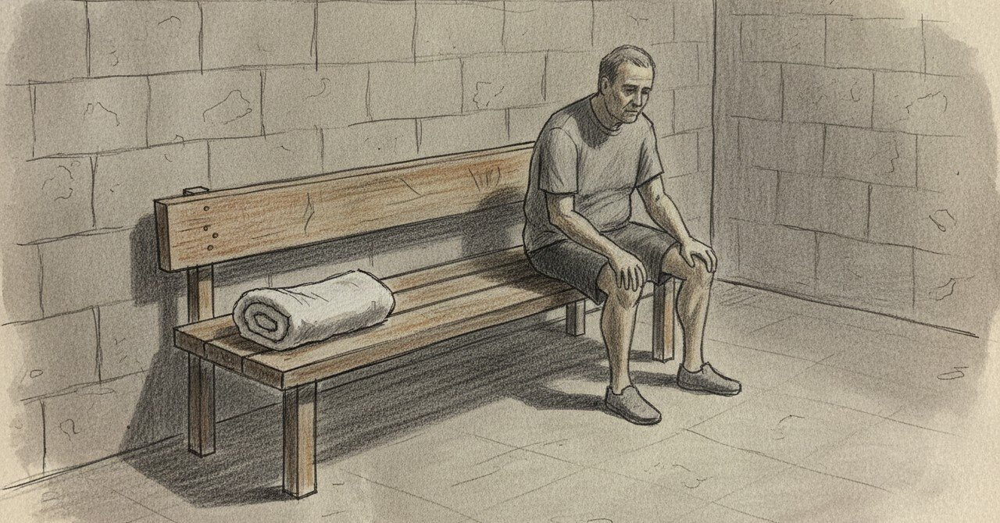

月1万円のジムに飛び込んだ夜

2024年の9月、月1万円のスポーツジムに入会した。
あの夜の日記に、こう書いている。
月1万円で小さくない金額だし続けられるか不安であるが、飛び込んでみよう。何かが変わる。
今読むと、飛び込む理由が全然ロジカルじゃない。
「続けられるか不安」と言いつつ「何かが変わる」と続けている。 根拠は何もない。あるのは、あの時期の自分の、このままじゃ壊れる感だけだった。
最初はサウナと風呂だけだった
入会した日、筋トレは一度もやらなかった。 風呂に入って、サウナに行って、帰った。
次の日も同じ。
月1万円払って、銭湯より少し良い風呂を使っているだけ、みたいな日が何日か続いた。
それでも、通い続けることはできた。 「今日はマシンを触ろう」とか「走ってみよう」とか、そういう気合いはなかった。 ただ、行くだけ行く。そのハードルだけ下げていた。
今思うと、この時期に筋トレを無理やり始めなかったのが良かった。 「月1万円の施設に入ったなら元を取らないと」みたいな発想を、自分に課さずに済んだ。
ズボンのホックが留まった日
入会して2週間くらい経った頃から、ちょっとずつマシンに触るようになった。 筋トレのメニューも組まずに、空いている機械を使っていた。
それから半月。
ズボンのホックが、留まるようになった。
職場で会議に出た日、誰かが気づいてくれた。 他人の変化のほうが、自分の変化より先に見える。
あの日の日記に、こう書いている。
dLABOマジで凄い。自分がみるみる変わってく。
でも本当は、dLABOじゃなくて、月1万円の暴挙のほうが効いていたのだと、今ならわかる。
心拍余裕、ここからメンタル戦
2025年2月、初マラソンを完走した。13位だった。
途中でテンションが上がって、「心拍余裕じゃね？ここからはメンタルとの戦いだぁ」と書いている。
ジム入会の半年後。 身体のほうが先に、「戦える状態」を作ってくれていた。
心の変化は、身体の変化に半年遅れてやってくる。 これは、月1万円を払い続けなかったら、絶対わからなかったことだ。
「不安」が消えたことに、気づいていなかった
入会から1年半経って、ようやく気づいた。
「続けられるか不安」と書いた夜があったこと、しばらく忘れていた。
不安は、解消されたわけじゃない。 ただ、気にしなくなった。
月1万円が小さくない金額であることは今も変わらない。 でも、続くかどうかという問いが、もう自分の中に立たない。
続いているから。
飛び込むときに、理由は必要なかった。 理由が立つ頃には、飛び込むタイミングは過ぎている。
身体を動かすことを通じて自分を整える記録を、AkariLab X（@makochinta1） でも毎日書いています。